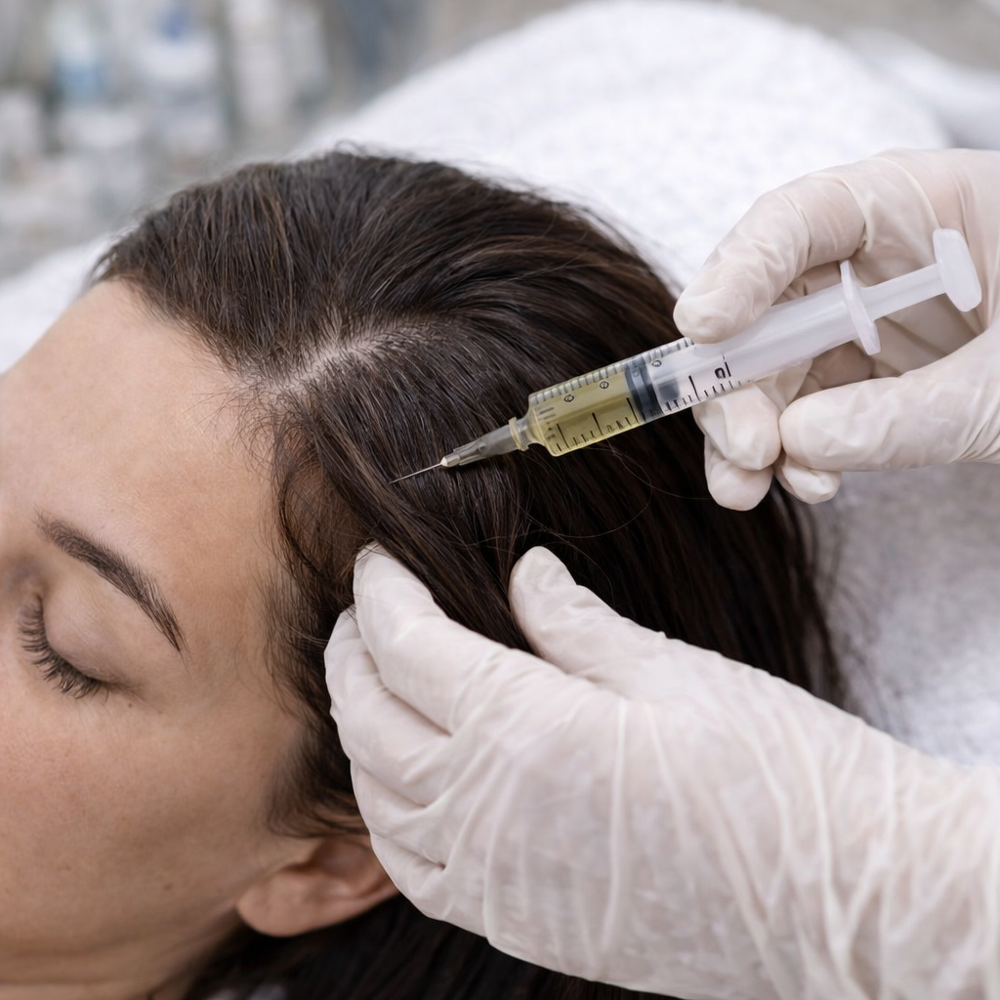

O estímulo capilar é um tratamento voltado para fortalecer os fios, estimular o crescimento e melhorar a saúde do couro cabeludo, promovendo mais vitalidade, resistência e bem-estar.

O tratamento de estímulo capilar auxilia na revitalização do couro cabeludo e no fortalecimento dos fios, sendo uma excelente opção para quem deseja cuidar da saúde capilar de forma segura e eficaz.
Indicado para pessoas que sofrem com enfraquecimento, queda capilar ou que desejam melhorar a qualidade, a força e a aparência dos fios.
← Voltar para procedimentos